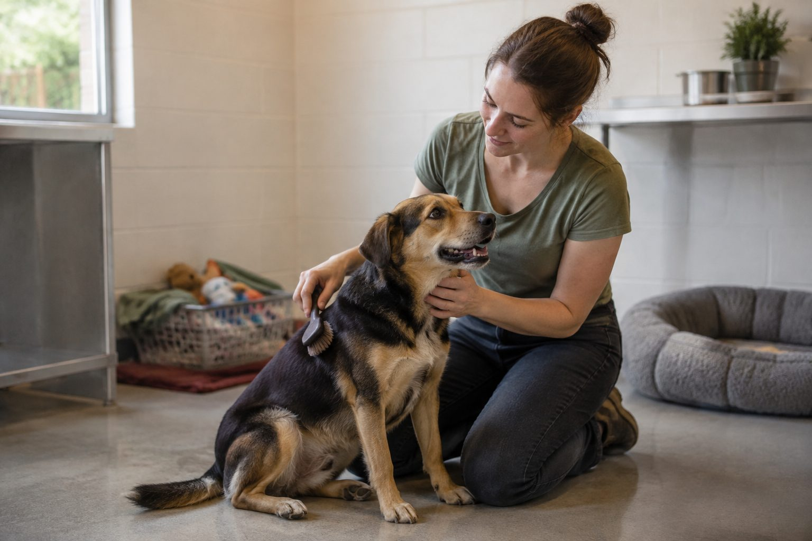

Nossa atuação
Projetos e formas de ajudar
Conheça as principais frentes de atuação e escolha a melhor maneira de participar.
Projetos e ações
Projeto ativo Resgate Adoção
Do resgate à adoção
O atendimento começa com o acolhimento do animal, seguido por avaliação, cuidados básicos e divulgação responsável para adoção.

Voluntariado
Voluntariado Inscrições abertas
Doe seu tempo
Os voluntários podem ajudar em campanhas, eventos de adoção, divulgação e cuidados com os animais.
- Apoio em eventos de adoção;
- Organização de doações;
- Divulgação das campanhas.
Doações
Doações Campanha contínua
Contribua com materiais
As doações ajudam a manter o atendimento e podem ser realizadas de acordo com a necessidade do projeto.
- Ração para cães e gatos;
- Medicamentos veterinários;
- Produtos de limpeza e higiene.